Bachelor's thesis · Reijmyre Glasbruk · 2026
Nikolina
A pendant lamp that turns two of Reijmyre's hand-blown glass pieces into a glare-free, focused light, built from standard components and ready for production.
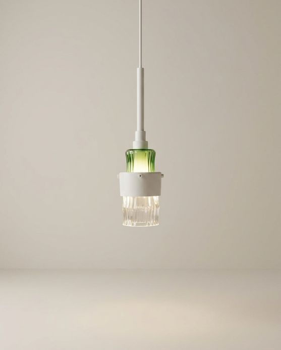
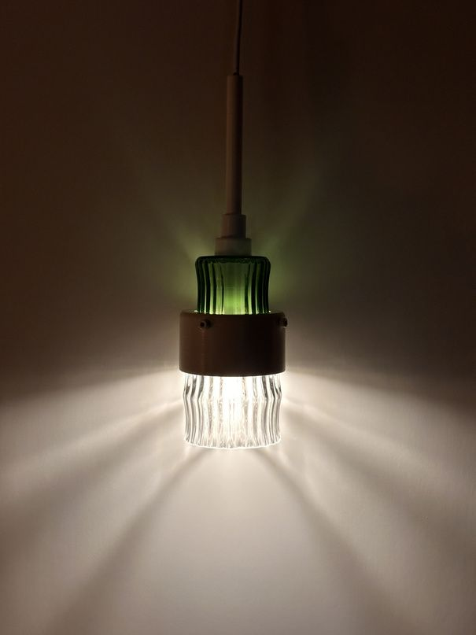
The brief
Reijmyre Glasbruk has blown glass by hand since 1810. As a team of seven students we were asked to explore how their existing glass, the Lina and Ebba collections by designer Thomas Sandell, could be combined with off-the-shelf components to create technically sound, reproducible lighting for today's market.
The team developed a family of three lamps, each based on one of Richard Kelly's three principles of light. I was responsible for Nikolina, the lamp built around Focal glow: light that sets a mood while drawing attention to a surface.
Understanding light in glass
Before sketching, we built a light lab at the university to test colour temperature, luminous flux, bulb types and how light behaves in different glass structures. These are the insights that shaped Nikolina:
- Glass colour dominates the light. Coloured glass tints everything, so the light should lift the colour rather than depend on it.
- Glass alone can't stop glare. Direct light through clear glass is harsh, so the source needs to be shielded or diffused.
- Reflective surfaces soften light. Bouncing light off surfaces both controls direction and dims it.
- Hand-blown glass varies. Wall thickness changes from piece to piece, so the construction has to reference the constant dimensions, like the outer diameter, and stay flexible around the rest.
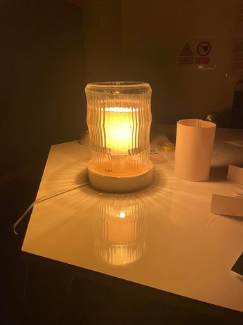
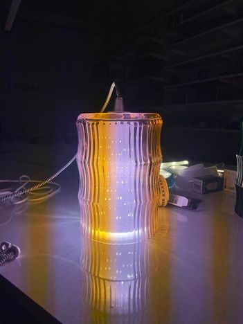
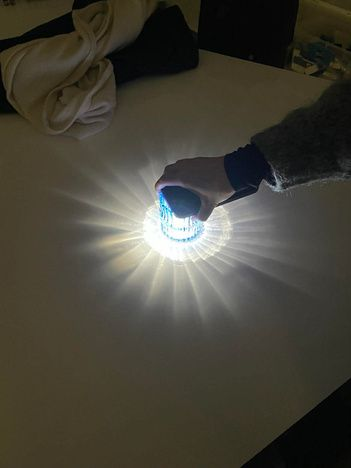
Concept
Fifteen early concepts combined the Lina and Ebba pieces in pendants, table lamps and wall lights. Nikolina grew out of concept No. 2: a small pendant pairing a clear Lill-Lina with a coloured Mini-Lina on top.
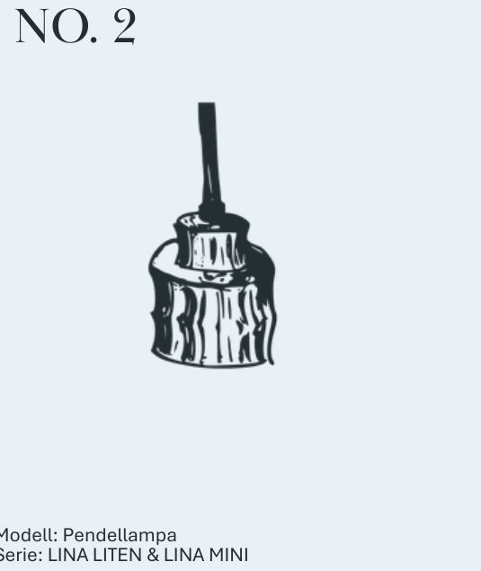
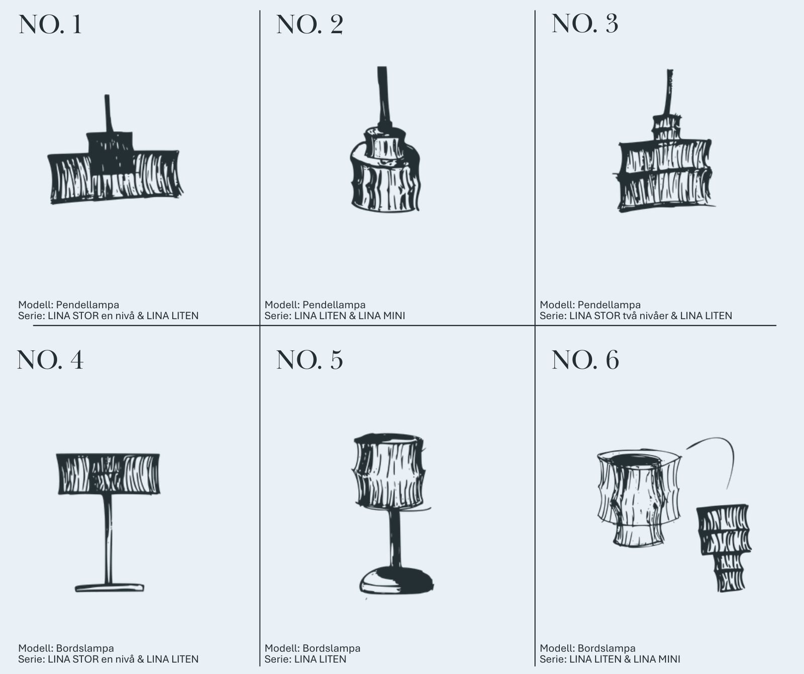
Construction
The upper glass gets a water-jet cut hole for cable and socket, the lower one a hole that lets light out. A metal cylinder around the source does two jobs: its untreated inside reflects light up into the coloured glass, and its outside hides the bulb to prevent glare.
The white lacquered holder screws onto a pendant tube that carries all the load and keeps the lamp hanging straight, despite variations in the glass. Mini-Lina simply rests on top without any mechanical stress, and Lill-Lina is held from inside by an O-ring pressed into a custom groove, so the fixing is secure and invisible.
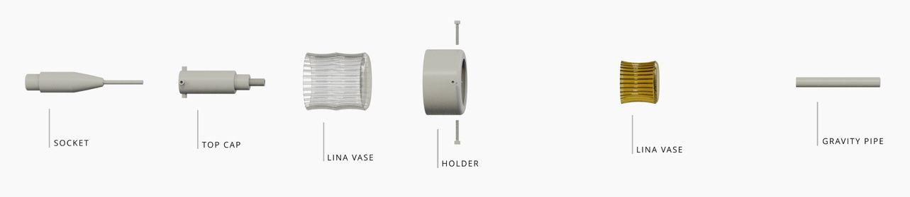
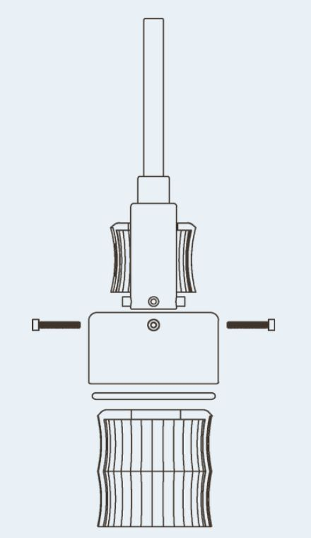
The light
Most of the light goes down through the opening, while some is reflected up through the coloured glass, so it's soft and never blinding.
The white holder and cylinder minimise light absorption and pass the light on through the lamp, while the cylinder's raw interior spreads it both up and down to bring out the colour and texture of the glass.
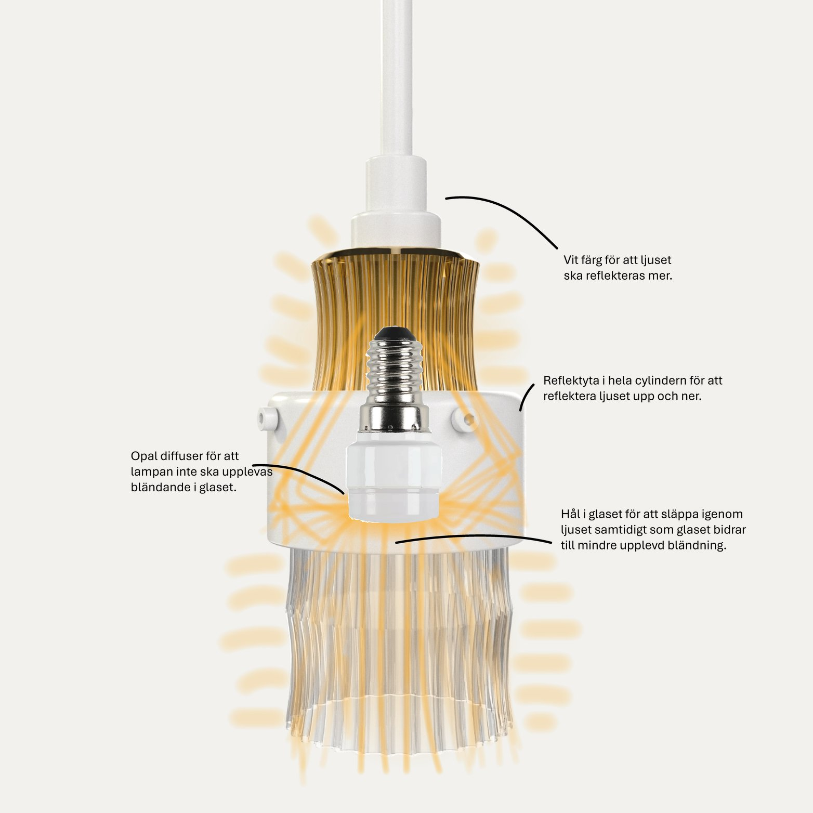
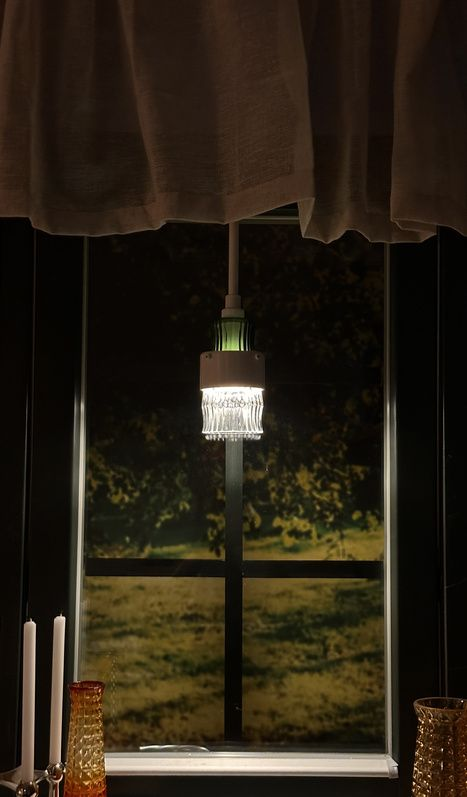
Colourways
Because the light lifts the colour rather than depending on it, Nikolina works with Reijmyre's classic glass colours and can be matched to different interiors.
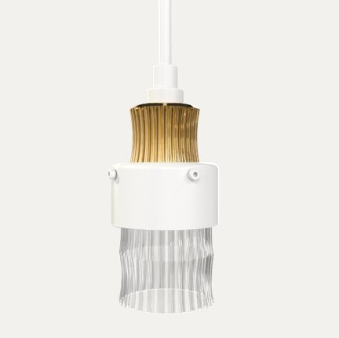
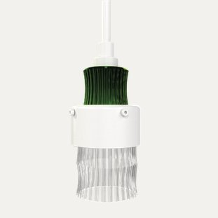
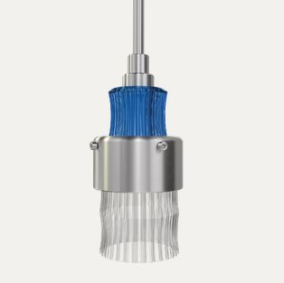
Prototype
I modelled all components in Fusion 360 and 3D-printed them in PLA. The parts are joined with M4 threads and spray-painted for the final finish. Lill-Lina is clamped into the cylinder with an O-ring in a groove, and a standard lamp holder sits hidden inside the white holder.
The finished lamp was shown at a vernissage at Linköping University, staged in a room scenography together with the rest of the family and Reijmyre's vases.
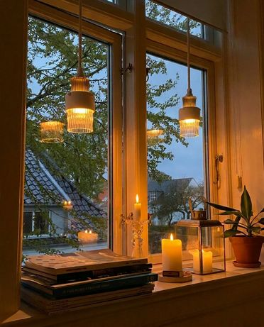
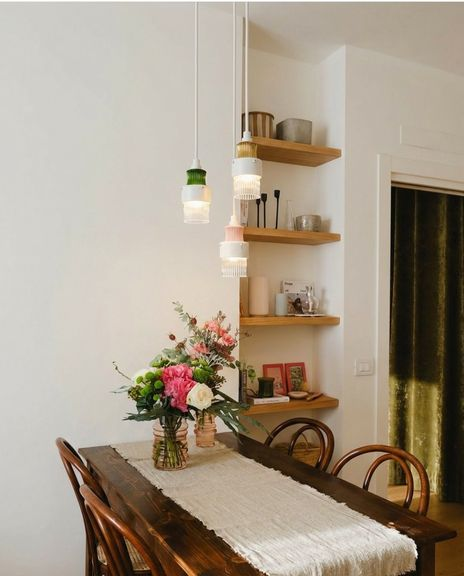
Outcome
A production-oriented pendant that respects the variation of hand-blown glass, uses standard components and gives Reijmyre a new way to sell existing pieces as lighting.
Nikolina was part of a team bachelor's thesis (7 students) that also produced the Celina ceiling lamp and the Paulina table lamp.
Next project